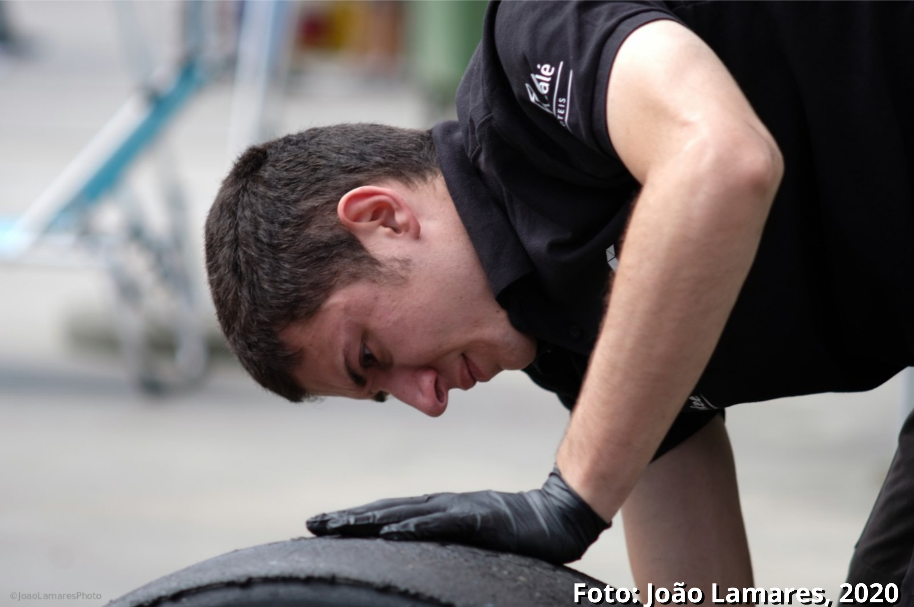

Sobre
A Luso Garagem foi idealizada pelo técnico certificado em mecânica, Pedro Heinrik, que já atua no mercado a 7 anos, e com a experiência adquirida de oficinas autorizadas à mecânica de corridas, a oficina busca trazer o melhor serviço de reparo para seu veículo com preços justos mantendo o padrão de excelência e agilidade, garantindo qualidade e satisfação dos clientes.
Nosso Estabelecimento
Locaizada em Ibirité, a oficina é equipada com ferramentas de qualidade para garantir um serviço eficiente.
Diferencial
- Atendimento aos clientes
- Preço justo
- Serviço com atenção aos detalhes
- Profissional qualificado
- Materiais de qualidade
- Limpeza
- Desconto por serviços complementares
- Transparência no orçamento